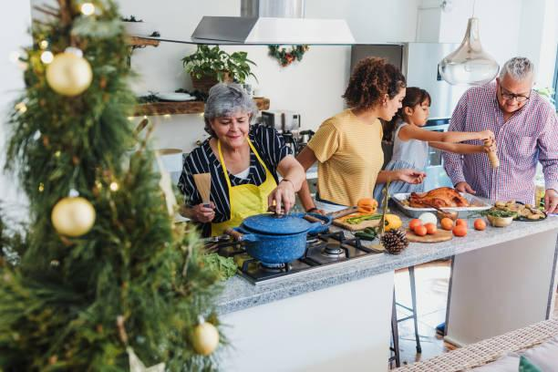

The first Thanksgiving I hosted, I made everything from scratch for eight people. It was stressful but manageable. The second Thanksgiving, my in-laws came. That was twelve people. I doubled every recipe. The turkey took forever. The gravy was too salty. The mashed potatoes overflowed the pot. The pies were raw in the middle because I put too many in the oven at once. I learned that holiday cooking is just scaling under pressure. And pressure makes you stupid.
After that disaster, I started developing scaled versions of holiday recipes. Not just multiplying ingredients, but adjusting for oven space, cooking times, and the fact that people eat more on holidays. A lot more. I've tested these recipes on my family, my students, and a very patient group of neighbors. Now I can feed 20 or 30 people without breaking a sweat. Here are twelve holiday recipes with their scaling secrets.
Turkey gravy is the one that trips everyone up. The original recipe might make 2 cups of gravy from the turkey drippings. For 8 people, that's a quarter cup each, which is fine. For 16 people, you need 4 cups. But you can't just double the drippings because the turkey only has so much. The fix is to make a separate broth-based gravy and mix it with the drippings. I scale the gravy by making a roux first. 100 grams of butter and 100 grams of flour for every 4 cups of liquid. For 16 people, I make 4 cups of gravy using 50 grams each of butter and flour. That's a smaller roux than you'd think because the drippings add flavor. I add the turkey drippings at the end, about half a cup per 4 cups of gravy.
Mashed potatoes are another scaling challenge. A standard recipe uses about 250 grams of potatoes per person. For 8 people, that's 2 kilograms. For 16 people, 4 kilograms. But you can't boil 4 kilograms of potatoes in a home pot. They won't cook evenly. The fix is to cook them in batches. Boil 2 kilograms, mash them, keep them warm in a slow cooker. Boil the next 2 kilograms, mash them, add to the slow cooker. This takes longer but it works. I also use more butter and cream at scale because potatoes dry out faster in large batches. Add an extra 10% fat for every doubling.
Stuffing, or dressing depending where you're from, scales well but has a texture trap. A small batch of stuffing bakes in about 30 minutes. A large batch, like a full 9x13 pan, takes 45 minutes. The top gets crispy while the middle stays wet. The fix is to bake the stuffing in two shallow pans instead of one deep pan. Same total volume, but more surface area. Each pan bakes in 30 minutes. I also add extra broth at scale because large pans dry out faster.
Cranberry sauce is the easiest to scale. It's just cranberries, sugar, and water. The ratio is 3 cups cranberries to 1 cup sugar to 1 cup water. That makes about 3 cups of sauce. For 16 people, you need about 6 cups. Just double everything. It scales linearly. The only trick is that larger batches take longer to come to a boil. Add 5 minutes of cooking time for every doubling. Watch for the cranberries to pop.
Pumpkin pie is tricky because of oven space. One pie serves 8. For 16 people, you need two pies. For 24 people, three pies. Most home ovens fit two pies on the center rack. If you need three, you have to bake in batches. The filling scales linearly. The crust scales linearly. But the baking time changes if you put two pies in at once. They take about 5 minutes longer because they crowd the oven. I rotate the pies halfway through.
Green bean casserole is a crowd favorite that scales poorly. The classic recipe uses canned soup and fried onions. At small scale, it's fine. At large scale, the soup gets gloppy and the onions get soggy. I make my own sauce instead. 50 grams butter, 50 grams flour, 500 grams milk, salt, pepper. That makes enough sauce for about 500 grams of green beans. For 16 people, use 1 kilogram of green beans and double the sauce. Bake in two 8x8 pans instead of one 9x13. The casserole bakes faster in smaller pans, about 20 minutes instead of 30.
Ham glaze is simple to scale. Most recipes use brown sugar, mustard, and vinegar. The ratio is 1 cup brown sugar, 2 tablespoons mustard, 1 tablespoon vinegar per ham. If you're making two hams, double the glaze. If you're making one large ham, you might need 1.5 times the glaze because larger hams have more surface area. I glaze the ham every 20 minutes during the last hour of baking. The glaze caramelizes better with multiple coats.
Dinner rolls are the most challenging to scale because of proofing. A small batch of 12 rolls proofs in about an hour. A large batch of 48 rolls might take 90 minutes because the dough is colder and denser. The fix is to divide the dough into smaller portions before proofing. Four batches of 12 rolls each. Each batch proofs in its own bowl. Then you shape and bake in batches. The recipe scales linearly for ingredients, but the timing requires attention.
Sweet potato casserole with marshmallows is another oven-space problem. One 9x13 pan serves 12. For 24 people, you need two pans. But the casserole needs to brown on top. If you put two pans in the oven, they might not brown evenly. I bake them one at a time on the top rack. The first pan takes 25 minutes. The second pan takes 20 minutes because the oven is already hot. I adjust my timeline accordingly.
Apple pie is like pumpkin pie. One pie serves 8. For 16, two pies. For 24, three. The filling scales linearly. The crust scales linearly. But apple pie needs more time than pumpkin pie, about 50 minutes. With two pies in the oven, add 10 minutes. Rotate halfway. I also put a baking sheet on the rack below to catch drips.
Eggnog is the holiday drink everyone wants. A standard recipe uses eggs, milk, cream, sugar, bourbon, and nutmeg. For 8 people, 4 cups of eggnog is enough. For 16, 8 cups. But you can't just double the eggs and cream because raw eggnog is risky at large scale. I use pasteurized eggs or a cooked custard base. The cooking method scales well. Heat the milk, cream, and sugar. Temper the eggs. Cook to 160 degrees. Cool. Add bourbon. This method works for any scale. Just use a larger pot.
Cookies are the final holiday essential. You need hundreds of cookies for cookie swaps and platters. A standard recipe makes 24 cookies. For 100 cookies, you need about 4 batches. But don't try to make one batch of 100. The dough won't mix evenly. Make four separate batches of 24. The ingredients scale linearly, but the mixing time does not. A single batch of cookie dough takes 5 minutes in a stand mixer. A quadruple batch might take 15 minutes and could overmix. I make individual batches and combine the dough at the end.
The most important lesson I've learned about holiday scaling is to start early. Don't wait until the day before. Make a timeline. Write down when each dish goes in the oven and when it comes out. Account for oven space. If you need to bake three pies and a casserole, you need a schedule. I make my timeline three days before the holiday. I shop two days before. I prep one day before. The day of, I just execute.
I also use my tools to help with the math.
Now I look forward to holiday cooking. It's a challenge, but it's also a gift. Cooking for people you love is never a chore. Even when the gravy is too salty.
— Olivia
P.S. My mother-in-law now asks me for my gravy recipe. I gave it to her. She said it was too complicated. I said that's why mine is better. She didn't disagree.